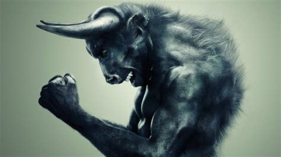

In Greek mythology, the Minotaur was a monster with the body of a man and the head and tail of a bull. The Minotaur was the offspring of the Cretan Queen Pasiphae and a majestic bull. Due to the Minotaur's monstrous form, King Minos ordered the craftsman, Daedalus, and his son, Icarus, to build a huge maze known as the Labyrinth to house the beast. The Minotaur remained in the Labyrinth receiving annual offerings of youths and maidens to eat. He was eventually killed by the Athenian hero Theseus.
Minos was one of the three sons from the union of Europa and Zeus; when Zeus was took the form of a bull. Europa's husband was the King of Crete, Asterion, who looked over the boys as if they were his own. When Aseterion died, it was unclear which of the three sons should ascend to power. The three sons were Minos, Sarpedon, and Rhadamanthus. It was Minos, whose name in Cretan actually means king, who was fated to be king of Crete even though Minos' ascension to power was a difficult journey because he first had to see off his sibling rivals.  Minos, however, had one advantage that his brothers did not. He claimed that he had the support and authority from the gods to rule, and he boasted that he could prove it by praying for whatever he wanted and the gods would make it so. Thus, one day while sacrificing to Poseidon, he prayed that a bull would appear from the depths of the sea. Minos vowed to heaven that he would sacrifice the bull to Poseidon once it appeared. Poseidon, then, produced a magnificent bull from the sea; thus, Minos' claim for power was validated for no one dared to defy the favor of the gods, let alone the mighty Poseidon who ruled over all of the seas. As a result of winning the throne, Minos banished his brothers from Crete. The three brothers would be re-united in afterlife, for after they died they were made judges in the Underworld. It was their task to judge the dead in order to assign where their placement was in the Underworld based upon the merits of their life.
However, King Minos did not fulfill his vow to Poseidon; he kept the majestic bull for himself and sacrificed a different one to the god. Angered by King Minos' disrespect, Poseidon plotted to punish him for his arrogance and hubris. In accordance to some versions of the myth, it is Poseidon who punishes Minos by instilling a passion within the king's wife, Pasiphae, for the bull that came from the sea. However, according to the Roman author Hyginus, it is Venus (Aphrodite) who curses Pasiphae, because the Queen had not shown proper piety to the goddess for some time. The goddess punished her by sending a salacious passion for the majestic bull from the sea. Another version tells how Poseidon, angered by Minos, went to Aphrodite for her help in the matter and she cursed Pasiphae as a favor to Poseidon.